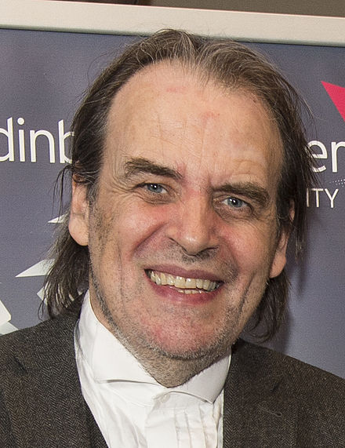

Professor Bill Buchanan
Biography: Bill Buchanan is a Professor in the School of Computing at Edinburgh Napier University, and a Fellow of the BCS and the IET. He was appointed an Officer of the Order of the British Empire (OBE) in the 2017 Birthday Honours for services to cyber security. He recently received an "Outstanding Contribution to Knowledge Exchange" award at the Scottish Knowledge Exchange awards., and was the Cyber Evangelist of the Year in 2016. Currently he leads the Centre for Distributed Computing, Networks, and Security and The Cyber Academy (thecyberacademy.org). His research has led to three successful spin-out companies, including Zonefox, and has developed a number of patents. He has also published over 270 academic papers and 28 academic books. His main research focus is around information sharing, such as using Trust and Governance Policies, threat analysis, cryptography, Blockchain, e-Health, and triage within digital forensics. Bill regularly appears on TV and radio related to computer security, and has given evidence to both the UK and Scottish parliaments. He has been named as one of the Top 100 people for Technology in Scotland for every year since 2012, and was also included in the FutureScot "Top 50 Scottish Tech People Who Are Changing The World". Recently his work on Secret Shares received "Innovation of the Year" at the Scottish Knowledge Exchange Awards, for a research project which involves splitting data into secret shares, and can then be distributed across a public Cloud-based infrastructure. He was also included in the JISC Top 50 Higher Education Social Media Influencers and has one of the most extensive Web sites for computer security education (asecuritysite.com).
Towards A New World: Creating A World Fit for the 21st Century
Abstract: The Internet that we have created differs little from the one that was created over 40 years. In places we have "sticking plasters" in order to overcome problems, but major risks exist for the long-term scalability of the Internet. Along with this we can trust very few things on the Internet, especially around electronic mail, and even in the Web sites that we visit. Our Internet is thus perhaps fit for the 20th Century, and needs to move itself into the 21st Century. At the core of this will be the integration of trust into every single transaction, improvements in the linkage between human and digital trust; and a stronger understanding of identity. This presentation will thus outline how we need to move our current systems towards a citizen-focused approach, and how cryptography can build a new and more trusted world. Only when we get to this point, can we scale into the future. Along the way, Bill will outline some of the risks that we face, especially in terms of resilance, and highlight some poor examples of security, especially as we move into a world which will be dominated by IoT. In conclusion he will show that if we can build a more trustworthy foundation, we can create new public sector infrastructures, especially in areas such as health and well-being.
Andrew Richards
Biography: CEO and co-founder of the company. Andrew started his career writing video games, in the days of 8-bit computers, progressing to become a lead games programmer at Eutechnyx, where he wrote best-selling titles such as Pete Sampras Tennis and Total Drivin'. Andrew researched and developed compiler technology, and founded Codeplay in 2002. Codeplay have been producing compilers for games consoles, special-purpose processors and GPUs since then. As well as being CEO and Founder of Codeplay Software Ltd, Andrew is also the Chair of the Software working group of the HSA Foundation and former Chair of the SYCL™ for OpenCL™ sub-group of the Khronos Group. Today, Codeplay is a world-leading specialist in heterogeneous computing technology, working on AI and self-driving cars.
Bringing Safe AI to Silicon
Abstract: How do you get AI software from the lab into real products like smartphones and self-driving cars? Andrew Richards, CEO and founder of Codeplay, will present how his Edinburgh-based company produces the tools to enable AI to be put into production. There are a range of challenges and opportunities in turning AI experiments into products that are safe enough to drive a car, or low-power enough to run on a battery. Codeplay was an early pioneer of GPU acceleration and recently raised a multi-million pound investment from a consortium including Williams Advanced Engineering (the consultancy arm of the racing team) to take on the challenge of making AI acceleration safe.